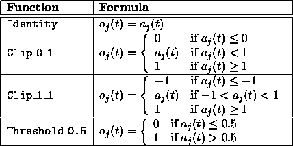

Next: Index
Up: No Title
Previous: Example 2:
References
- Aka69
-
H. Akaike.
Annals of the institute of statistical mathematics, 21, chapter
Fitting autoregressive models for prediction.
1969.
- Ama89
-
Shun-Ichi Amari.
Characteristics of Encoded Associative Memory.
Springer Verlag 1989, 1989.
- BD95
-
Michael R. Berthold and Jay Diamond.
Boosting the performance of rbf networks with dynamic decay
adjustment.
In G. Tesauro, D. S. Touretzky, and T.K. Leen, editors, Advances
in Neural Information Processing Systems, volume 7, 1995.
- BH93
-
D. Stork B. Hassibi.
Second order derivatives for network pruning: Optimal Brain
Surgeon.
In T. J. Sejnowski G. E. Hinton and D. S. Touretzky, editors,
Advances in Neural Information Processing Systems (NIPS) 5, pages 164--171,
San Mateo, 1993. Morgan Kaufmann Publishers Inc.
- Bie94
-
J. Biedermann.
Anwendungen Neuronaler Netze beim VLSI-CAD.
Diplomarbeit, Institut für Numerische und Angewandte Mathematik,
Georg-August-Universität Göttingen, 1994.
- CG87a
-
G. A. Carpenter and S. Grossberg.
A Massively Parallel Architecture for a Selforganizing
Neural Pattern Recognition Machine.
Computer Vision, Graphics and Image Processing, 37:54--115,
1987.
- CG87b
-
G. A. Carpenter and S. Grossberg.
Stable self-organization of pattern recognition codes for analog
input patterns.
Applied Optics, 26:4919--4930, 1987.
- CG91
-
G. A. Carpenter and S. Grossberg.
ARTMAP: Supervised Real-Time Learning and Classification
of Nonstationary Data by a Self-Organizing Neural Network.
Neural Networks, 4:543--564, 1991.
- D.E93
-
D.Elliott.
A better activation function for artificial neural networks.
ISR Technical Report TR 93-8, University of Maryland, 1993.
- DH73
-
R. Duda and P. Hart.
Pattern Classification and Scene Analysis.
Wiley & Sons, Inc, 1973.
- Elm90
-
J. L. Elman.
Finding structure in time.
Cognitive Science, 14:179--211, 1990.
- Fah88
-
Scott E. Fahlman.
Faster-learning variations on back-propagation: An empirical study.
In T. J. Sejnowski G. E. Hinton and D. S. Touretzky, editors,
1988 Connectionist Models Summer School, San Mateo, CA, 1988. Morgan
Kaufmann.
- Fah91
-
S. E. Fahlman.
The recurrent cascade-correlation architecture.
Technical Report CMU-CS-91-100, School of Computer Science, Carnegie
Mellon University, 1991.
- FL91
-
S. E. Fahlman and C. Lebiere.
The cascade-correlation learning architecture.
Technical Report CMU-CS-90-100, School of Computer Science, Carnegie
Mellon University, August 1991.
- GFL86
-
N.H. Goddard, M.A. Fanty, and K. Lynne.
The Rochester Connectionist Simulator.
Technical Report 189, Computer Science Department, Univ. of
Rochester, June 1986.
- GHW79
-
G. H. Golub, M. Heath, and G. Wahba.
Technometrics, 21, chapter Generalized cross-calidation as a
method for choosing ridge parameter.
1979.
- GLML89
-
N. Goddard, K.J. Lynne, T. Mintz, and L.Bukys.
The Rochester Connectionist Simulator.
Technical Report 233 (revised), Univ. of Rochester, NY, oct 1989.
- God87
-
N. Goddard.
The Rochester Connectionist Simulator: User Manual.
Univ. of Rochester, NY, 1987.
- Har83
-
S. Harrington.
Computer Graphics - A Programming Approach.
McGraw-Hill, 1983.
- Her92
-
K.-U. Herrmann.
ART -- Adaptive Resonance Theory -- Architekturen,
Implementierung und Anwendung.
Diplomarbeit 929, IPVR, Universität Stuttgart, 1992.
- HF91
-
M. Hoefeld and S. E. Fahlman.
Learning with limited numerical precision using the
cascade-correlation algorithm.
Technical Report CMU-CS-91-130, School of Computer Science, Carnegie
Mellon University, 1991.
- Hil85
-
W.D. Hillis.
The Connection Machine.
MIT Press, 1985.
- HS86a
-
W.D. Hillis and G.L. Steele.
Data parallel algorithms.
ACM, 29(12):1170--1183, 1986.
- HS86b
-
W.D. Hillis and G.L. Steele.
Massively parallel computers: The Connection Machine and NONVON.
Science, 231(4741):975--978, 1986.
- Hüb92
-
R. Hübner.
3d--Visualiserung der Topologie und der Aktivität
neuronaler Netze.
Diplomarbeit 846, IPVR, Universität Stuttgart, 1992.
- Hud92
-
M.J. Hudak.
Rce classifiers: Theory and practice.
Cybernetics and Systems, pages 483--515, 1992.
- JGHL80
-
G. G. Judge, W. E. Griffiths, R. C. Hill, and T. Lee.
The theory and practice of econometrics.
John Wiley & sons, 1980.
- Jor86a
-
M. I. Jordan.
Attractor dynamics and parallelism in a connectionist sequential
machine.
In Proceedings of the Eighth Annual Conference of the Cognitive
Science Society, pages 531--546, Hillsdale NJ, 1986. Erlbaum.
- Jor86b
-
M. I. Jordan.
Serial order: A parallel distributed processing approach.
Technical Report Nr. 8604, Institute for Cognitive Science,
University of California, San Diego, La Jolla, California, 1986.
- JS91
-
R. Dow J. Sietsma.
Creating Artificial Neural Networks That Generalize.
Neural Networks, 4(1):67--79, 1991.
- KKLT92
-
T. Kohonen, J. Kangas, J. Laaksoonen, and K. Torkkola.
Lvq_pak learning vector quantization program package.
Technical report, Laboratory of Computer and Information Science
Rakentajanaukio 2 C, 1991 - 1992.
- KL90
-
J. Kindermann and A. Linden.
Inversion of neural networks by gradient descent.
Parallel Computing, 14:277--286, 1990.
- Koh88
-
T Kohonen.
Self-Organization and Associative Memory.
Springer-Verlag, 1988.
- Koh89
-
Teuvo Kohonen.
Self-Organization and Associative Memory, Third Edition.
Springer Verlag 1989, 1989.
- Kor89
-
T. Korb.
Entwurf und Implementierung einer deklarativen Sprache zur
Beschreibung neuronaler Netze.
Studienarbeit 789, IPVR, Universität Stuttgart, 1989.
- Kub91
-
G. Kubiak.
Vorhersage von Börsenkursen mit neuronalen Netzen.
Diplomarbeit 822, IPVR, Universität Stuttgart, 1991.
- KZ89
-
T. Korb and A. Zell.
A declarative neural network description language.
In Microprocessing and Microprogramming. North-Holland, August
1989.
- Mac90
-
N. Mache.
Entwurf und Realisierung eines effizienten Simulatorkerns für
neuronale Netze.
Studienarbeit 895, IPVR, Universität Stuttgart, 1990.
- Mam92
-
G. Mamier.
Graphische Visualisierungs--Hilfsmittel für einen Simulator
neuronaler Netze.
Diplomarbeit 880, IPVR, Universität Stuttgart, 1992.
- MM89
-
P. Smolensky M. Mozer.
Skeletonization: A Technique for Trimming the Fat from a
Network via Relevance Assessment.
In D. S. Touretzky, editor, Advances in Neural Information
Processing Systems (NIPS) 1, pages 107--115, San Mateo, 1989. Morgan
Kaufmann Publishers Inc.
- Mol93
-
Martin Fodslette Moller.
A scaled conjugate gradient algorithm for fast supervised learning.
Neural Networks, 6:525--533, 1993.
- MP69
-
M. Minsky and S. Papert.
Perceptrons: An Introduction to Computational Geometry.
The MIT Press, Cambridge, Massachusetts, 1969.
- MR92
-
H.Braun M. Riedmiller.
Rprop: A fast adaptive learning algorithm.
In Proc. of the Int. Symposium on Computer and Information
Science VII, 1992.
- MR93
-
H.Braun M. Riedmiller.
Rprop: A fast and robust backpropagation learning strategy.
In Proc. of the ACNN, 1993.
- P
 88
88 -
William H. Press et al.
Numerical Recipes, The Art of Scientific Computing.
Cambridge University Press, 1988.
- Pet91
-
A. Petzold.
Vergleich verschiedener Lernverfahren für neuronale Netze.
Studienarbeit 940, IPVR, Universität Stuttgart, 1991.
- RB93
-
M Riedmiller and H Braun.
A direct adaptive method for faster backpropagation learning: The
RPROP algorithm.
In Proceedings of the IEEE International Conference on Neural
Networks 1993 (ICNN 93), 1993.
- RCE82
-
D.L. Reilly, L.N. Cooper, and C. Elbaum.
A neural model for category learning.
Biol. Cybernet., 45, 1982.
- RHW86
-
D. E. Rumelhart, G. E. Hinton, and R. J. Williams.
Learning internal representations by error propagation.
In D. E. Rumelhart and J. L. McClelland, editors, Parallel
Distributed Processing: Explorations in the microstructure of cognition; Vol.
1: Foundations, Cambridge, Massachusetts, 1986. The MIT Press.
- Rie93
-
M Riedmiller.
Untersuchungen zu konvergenz und generalisierungsverhalten
überwachter lernverfahren mit dem SNNS.
In Proceedings of the SNNS 1993 workshop, 1993.
- RM86
-
D.E. Rumelhart and J.L. McClelland.
Parallel Distributed Processing, volume 1.
MIT Press, 1986.
- Sch78
-
G. Schwarz.
Annals of statistics 6, chapter Estimating the dimensions of a
model.
1978.
- Sch91a
-
M. Schmalzl.
Rotations- und translationsinvariante Erkennung von
maschinengeschrieben Zeichen mit neuronalen Netzen.
Studienarbeit 1011, IPVR, Universität Stuttgart, 1991.
- Sch91b
-
D. Schmidt.
Anwendung neuronaler Netzwerkmodelle zur Erkennung und
Klassifikation exogener und endogener Komponenten hirnelektrischer
Potentiale.
Studienarbeit 1010, IPVR, Universität Stuttgart, 1991.
- Sch94
-
T. Schreiner.
Ausdünnungsverfahren für Neuronale Netze.
Diplomarbeit 1140, IPVR, Universität Stuttgart, 1994.
- Shi68
-
R. Shibata.
Biometrika, 68, chapter An optimal selection of Regression
Variables.
1968.
- Sie91
-
J. Sienel.
Kompensation von Störgeräuschen in
Spracherkennungssystemen mittels neuronaler Netze.
Studienarbeit 1037, IPVR, Universität Stuttgart, 1991.
- SK92
-
J. Schürmann and U. Kreßel.
Mustererkennung mit statistischen Methoden.
Technical report, Daimler-Benz AG, Forschungszentrum Ulm, Institut
für Informatik, 1992.
- Som89
-
T. Sommer.
Entwurf und Realisierung einer graphischen Benutzeroberfläche
für einen Simulator konnektionistischer Netzwerke.
Studienarbeit 746, IPVR, Universität Stuttgart, 1989.
- Soy93
-
T. Soyez.
Prognose von Zeitreihen mit partiell recurrenten Netzen und
Backpropagtion.
Studienarbeit 1270, IPVR, University of Stuttgart, 1993.
- SUN86
-
SUN.
Sunview user reference manual.
Technical report, SUN microsystems, 1986.
- Vei91
-
A. Veigel.
Rotations-- und rotationsinvariante Erkennung handgeschriebener
Zeichen mit neuronalen Netzwerken.
Diplomarbeit 811, IPVR, Universität Stuttgart, 1991.
- Vog92
-
M. Vogt.
Implementierung und Anwendung von 'Generalized Radial Basis
Functions' in einem Simulator neuronaler Netze.
Diplomarbeit 875, IPVR, Universität Stuttgart, 1992.
- Was89
-
Philip D. Wasserman.
Neural Computing.
Van Nostrand Reinhold, New York, 1989.
- Was95
-
Philip D. Wasserman.
Advanced Methods in Neural Computing.
Van Nostrand Reinhold, 1995.
- Weh94
-
C. Wehrfritz.
Neuronale netze als statistische methode zur erklärung von
klassifikationen.
Master's thesis, Friedrich-Alexander-Universität
Erlangen-Nürnberg, Lehrstuhl für Statistik 1, 1994.
- Wer88
-
P. Werbos.
Backpropagation: Past and future.
In Proceedings of the IEEE International Conference on Neural
Networks, pages 343--353. IEEE Press, 1988.
- WHH

89 -
A. Waibel, T. Hanazawa, G. Hinton, K. Shikano, and K. Lang.
Phoneme Recognition Using Time Delay Neural Networks.
IEEE Transactions on Accoustics, Speech and Signal
Processing, 37:328--339, 1989.
- YLC90
-
S. Solla Y. Le Cun, J. Denker.
Optimal Brain Damage.
In D. S. Touretzky, editor, Advances in Neural Information
Processing Systems (NIPS) 2, pages 598--605, San Mateo, 1990. Morgan
Kaufmann Publishers Inc.
- You89
-
D.A. Young.
X-Window-System - Programming and Applications with Xt.
Prentice Hall, 1989.
- Zel94
-
Andreas Zell.
Simulation Neuronaler Netze.
Addison-Wesley, 1994.
published in German.
- Zim91
-
P. Zimmerer.
Translations-- und rotationsinvariante Erkennung von
Werkstücken mit neuronalen Netzwerken.
Diplomarbeit 777, IPVR, Universität Stuttgart, 1991.
- Zip90
-
D. Zipser.
Subgrouping reduces compexity and speeds up learning in recurrent
networks.
In D.S. Touretzky, editor, Advances in Neural Information
Processing systems II, pages 638--641, San Mateo, California, 1990. Morgan
Kaufmann.
- ZKSB89
-
A. Zell, T. Korb, T. Sommer, and R. Bayer.
Netsim: Ein Simulator für neuronale Netze.
In GWAI-89. Springer-Verlag (Informatik-Fachberichte), 1989.
- ZMS90
-
A. Zell, N. Mache, and T. Sommer.
Applications of neural networks.
In Proc. Applications of Neural Networks Conf., SPIE, volume
1469, pages 535--544, Orlando Florida, 1990. Aerospace Sensing Intl.
Symposium.
- ZMSK91a
-
A. Zell, N. Mache, T. Sommer, and T. Korb.
Design of the SNNS neural network simulator.
In Östreichische Artificial-Intelligence-Tagung, pages
93--102, Wien, 1991. Informatik-Fachberichte 287, Springer Verlag.
- ZMSK91b
-
A. Zell, N. Mache, T. Sommer, and T. Korb.
Recent Developments of the SNNS Neural Network Simulator.
In Proc. Applications of Neural Networks Conf., SPIE, volume
1469, pages 708--719, Orlando Florida, 1991. Aerospace Sensing Intl.
Symposium.
- ZMSK91c
-
A. Zell, N. Mache, T. Sommer, and T. Korb.
The SNNS Neural Network Simulator.
In GWAI-91, 15. Fachtagung für künstliche Intelligenz,
pages 254--263. Informatik-Fachberichte 285, Springer Verlag, 1991.
- ZZ91
-
P. Zimmerer and A. Zell.
Translations-- und rotationsinvariante Erkennung von
Werkstücken mit neuronalen Netzwerken.
In Informatik-Fachberichte 290, pages 51--58, München, 1991.
DAGM Symposium.
Niels.Mache@informatik.uni-stuttgart.de
Tue Nov 28 10:30:44 MET 1995